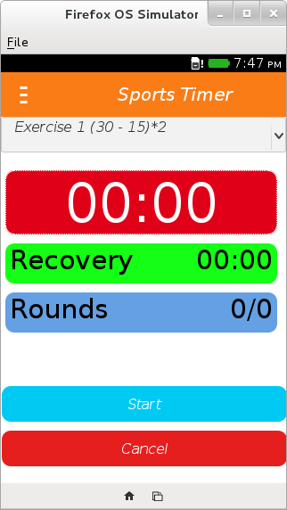

<body>
  <h1> Sports Timer</h1>
  <h2>Description</h2>

  Sports Timer is application for interval training. You define your effort time the recovery time and the number of rounds.

  <h3>Features</h3>
  <ul>
    <li>Manage exercises (add, delete, update)
    <li>Alarm sound</li>
    <li>Vibration</li>
  
  </ul>
  <h2>Screenshot</h2>
  
  
  
  
</body>


